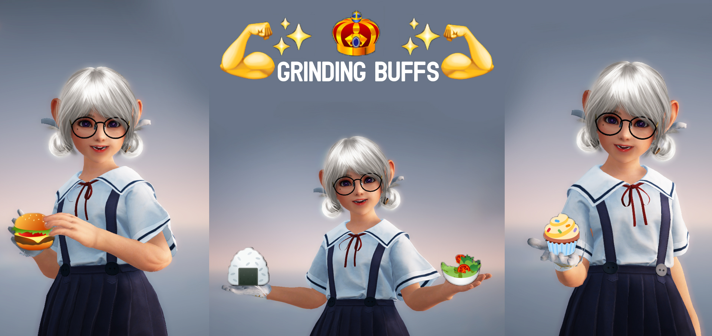
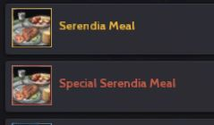
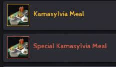
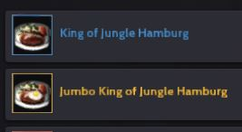
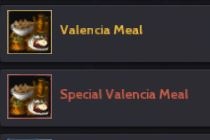
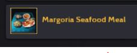
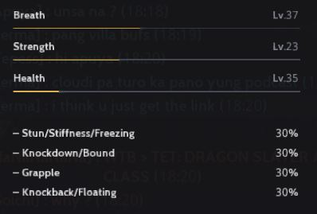
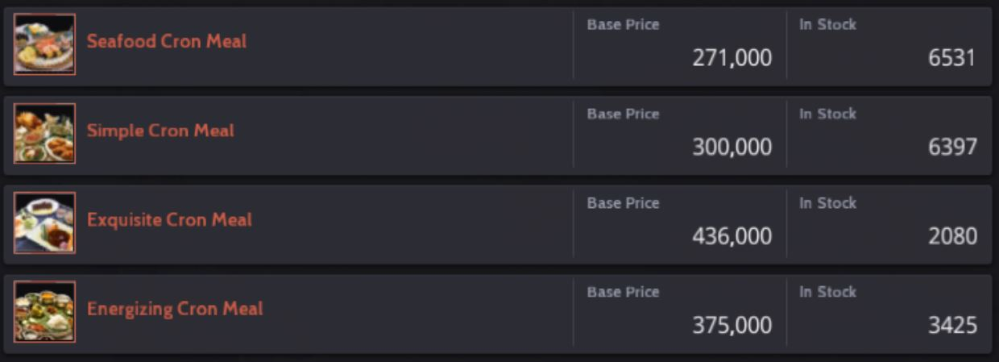
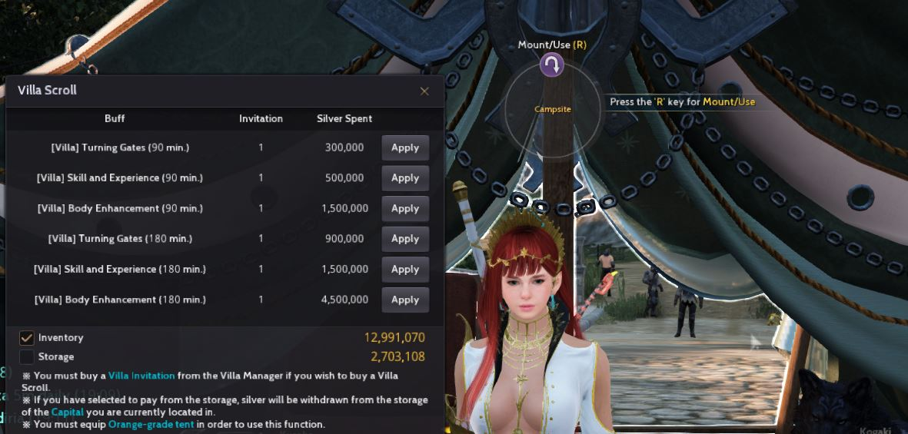
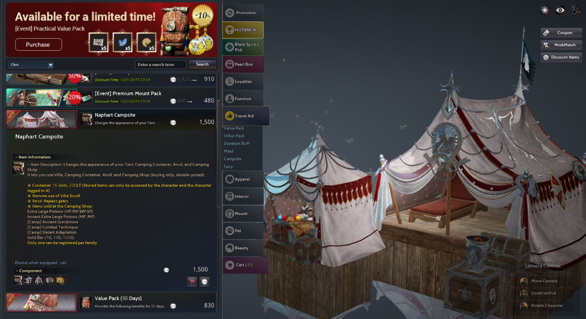

A guide to squeezed all the buffs you can get so you won't be at a disadvantage when grinding and fighting other players.

Food buffs are very important to the point that it could determine winning or losing in pvp, how fast you can kill mobs in pve or how fast your character can level up and all sorts of combat advantage. This guide will point you into to directions, one is the easy and most convenient way the other is the hassle but worth it in the long run way and you decide which route you want to take and which one works for you.
Food Buffs Menu 1
This is more suited for new adventurers because it's cheap and does the job, a little bit hassle when grinding but it's manageable. You benefit a lot for doing this in the long run. For this food buff rotation you can pop up to 4 different kinds of buff.
Four food buffs all classes should have:
   
Some players switch Valencia Meal for a Margoria Seafood Meal for movement speed +2.

Going with this food rotation comes with one good benefit it levels up your Health and every level gives you + health points which is very useful. Most of the players sometimes forget to pop the buffs every 30 mins because they're grinding but that's all right and sooner or later you'll get used to the rotation. Check your health level by pressing P.

Food Buffs Menu 2 (Cron Meals)
This is more expensive and less hassle food buffs. It levels up your health but not as fast as Food Buff Menu 1. It's basically all food buffs from Food Buff Menu 1 rolled into one for convenience.

Seafood Cron Meal. This is a cron meal for lifeskiller.
Simple Cron Meal. This is a cron meal for leveling your character.
Exquisite Cron Meal. This is a cron meal for PVP.
Energizing Cron Meal. This is a cron meal for more damage in pve.
I'm going to share additional grinding and pvp buffs that I personally use and won't grind even without one of these buffs.
For PVE
Beast Draught - for more damage on monsters and EXP/SKILL buff.
State Of Perseverance - It is a guild buff, ask your GM for this buff every 5 hours.
Simple Cron Meal if I want EXP and Energzing Cron Meal if the mob is too strong for me.
Exp or Skill buff you can get by exchanging your character's energy. Check Blackspirit for this buff.
Daily Mercenary scroll buff - I like to collect 3 and combine them. Check Y to claim this.
Book of Combat - you can buy this on central market or in Pearl Shop (Press F3 to access it).
Blessed Scrolls - for faster leveling (This is an event scroll). Check Y to claim this.
Combat Reward Faster and Stronger - this is only available from level 15 to 59. Check Y to claim this.
Gift From J - he's the best. Check loyalties to experience his awesomeness.
Outfit Exp and Skill 10% buff - Outfit is a must buy.
Villa Buff - Skill and Experience if you need more skill and exp and body enhancement for more damage.
The Naphart Campsite Buffs

This campsite is a huge advantage and help for many adventurers and I highly recommend it, a must buy for all players!. You can remotely use any buffs listed above depending on your need, it can also repair your gears which is great if you're grinding from far away places it's very convenient and on top of that you can buy Health and Mana Potions. Do you feel like winning now? You need a villa invitation to use this campsite which cost 10m (Must be in the form of Goldbar in order to purchase 7 days only). Purchase Villa invitation in Mediah Region (The blue house like icons in Mediah).
You can buy the campsite in pearl shop "Travel Aid" category. I assure you this is a game changer experience and you won't regret it. Almost all of my guildmates owns this campsite and it's been a sweet experience ever since.

For PVE
Giant Draught - for more damage against other players.
Perfume of Courage - this goes well with giant draught to maximize your damage output.
Exquisite Cron Meal - a must food buff for pvp.
Villa Buff - you want to Body Enhancement Buff.
How Decoration Buffs - certain decoration inside your house gives buffs.
Khalk's Elixir - for more resistance and damage reduction.